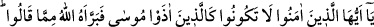
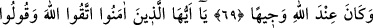
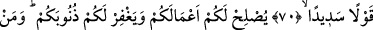
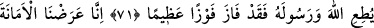
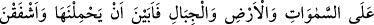
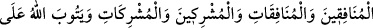
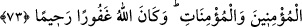

ALLAH’TAN KORKUN
VE DOĞRU SÖZ SÖYLEYİN
69. Ey îman edenler! Siz de Musa’ya eziyet edenler gibi olmayın. Nihâyet Allah
onu, dedikleri şeyden temize çıkardı. O, Allah yanında şerefli idi.
70. Ey îman edenler! Allah’tan korkun ve doğru söz söyleyin.
71. (Böyle davranırsanız) Allah işlerinizi düzeltir ve günahlarınızı bağışlar. Kim
Allah ve Rasûlüne itâat ederse büyük bir kurtuluşa ermiş olur.
72. Biz emâneti, göklere, yere ve dağlara teklif ettik de onlar bunu
yüklenmekten çekindiler, (sorumluluğundan) korktular. Onu insan yüklendi.
Doğrusu o çok zâlim, çok câhildir.
73. (Allah bu emâneti insana vermek sûretiyle), münâfık erkeklere ve münâfık
kadınlara, müşrik erkeklere ve müşrik kadınlara azap edecek, îman eden
erkeklerin ve îman eden kadınların da tevbesini kabul buyuracaktır. Allah
bağışlayandır, merhamet edendir.
“Ey îman edenler! Siz de” Rasûlullah (s.a.)’e eziyet etmek konusunda “Mûsâ’ya
eziyet edenler” Kârun, taraftarları ve diğer İsrâiloğulları’nın beyinsizleri “gibi
olmayın.”
Bu âyetin Hz. Zeyneb’in durumu ve daha önce geçtiği gibi insanların onunla ilgili
sözleri hakkında nâzil olduğu söylenmiştir.
Abdullah b. Mes‘ud (r.a.)’dan rivâyet edildiğine göre Hz. Peygamber (a.s.) bir
ganîmet taksiminde bulundu. Bir adam “Bu taksimatta Allah rızâsı gözetilmedi.” dedi.
Ben Hz. Peygamber (s.a.)’in yanına varıp bunu kendisine haber verdim. O kadar kızdı ki
ben bu kızgınlığı O’nun yüzünde gördüm. Sonra: “Allah Mûsâ’ya rahmet eylesin, o
bundan daha çok eziyete mâruz kaldı.” buyurdu.[320]